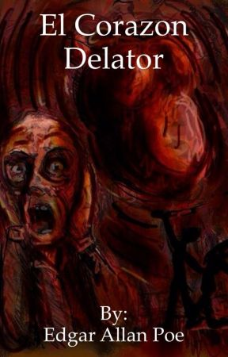
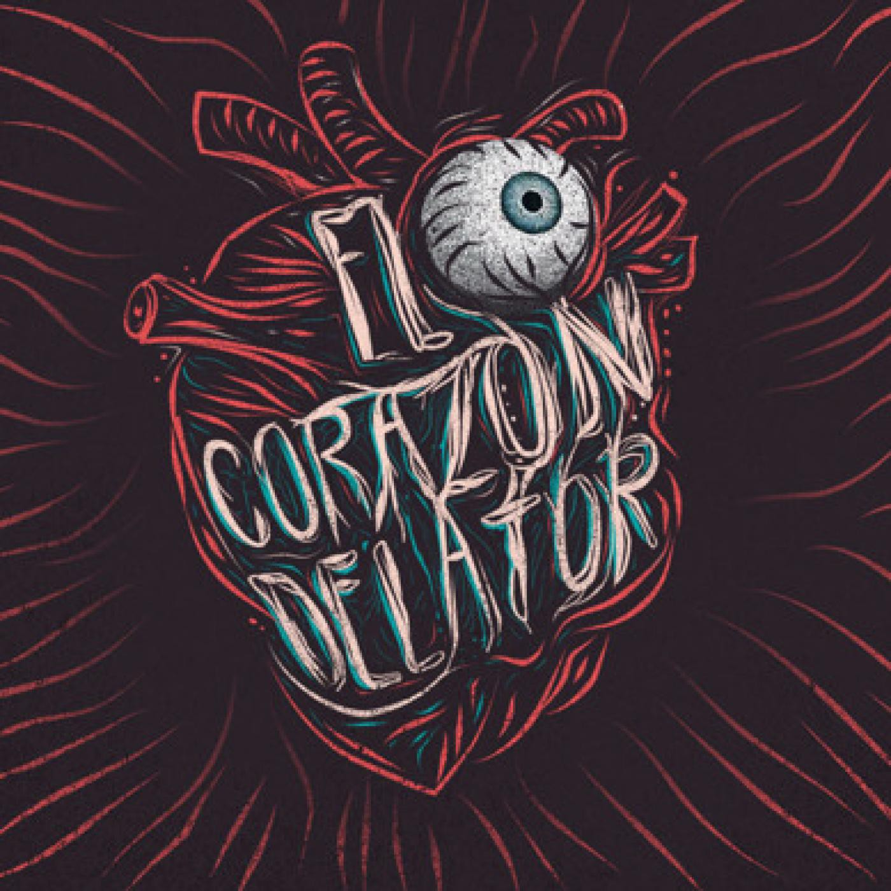

|  |  |
El relato comienza con la confesión del protagonista, que admite ser muy nervioso, pero niega estar loco. Así comienza a hablar de la víctima, a la que llama “el viejo”. No lo odiaba, ni tenía nada contra él, ni discutió con él. Sencillamente, el viejo tenía un ojo cubierto de un velo azul pálido, semejante al de un buitre, y cuya mirada le desagradaba. El protagonista deseaba matar al viejo para librarse la mirada de ese ojo. Es de ese modo como el hombre detalla de modo minucioso cómo planificó los detalles del crimen, y cómo iba todas las noches de manera muy silenciosa a ver dormir al viejo, ayudado por una pequeña lámpara. Se asomaba cada noche en la habitación, pero cada noche desistía de matarlo, porque el viejo tenía los ojos cerrados, y lo que le molestaba era la mirada del “ojo de buitre”. Todo este ritual se mantuvo idéntico durante siete noches. Durante el día, el protagonista trataba al viejo con la mayor amabilidad; incluso mayor de la que le dispensaba habitualmente.
El hombre entonces narra los hechos de la octava noche, cuando el viejo se despierta sobresaltado por la presencia de alguien en su habitación. No podía ver a nadie porque el protagonista no ha encendido la lámpara, y la habitación tenía las ventanas selladas. El asesino se queda quieto a la espera de que el viejo vuelva a dormirse, pero el anciano se mantiene sentado a la espera, sintiendo que había alguien más. El protagonista abre un poco la lámpara para ver la escena, y ve el ojo de buitre al que tanto odia. Lo que termina de precipitar los hechos, es que el asesino percibe, cada vez más fuertes, los latidos del corazón del viejo. Creyendo que los latidos despertarán a los vecinos, el protagonista termina de abrir la lámpara y se abalanza sobre el viejo que emite un grito, dándole muerte. No se especifica cómo lo mata.
Ella era una virgen de singular hermosura que se enamoró de un pintor, el cual era de carácter apasionado, estudioso y austero. El pintor le hizo un retrato, de forma que todos los días ella tenía que subir a su torre para ser pintada durante horas. Nos habla que el pintor se perdió en una inspiración tan grande que llego a descuidar a gran grado a su nueva esposa. El tiempo pasaba y la joven se iba marchitando.
Sin embargo, un vecino pudo oír el grito del viejo antes de morir, y llamó a la policía. Tres oficiales se presentaron para averiguar sobre el hecho, y el protagonista cuenta cómo los recibió, les hizo pasar y ofreció asiento. Les dijo que el viejo salió de viaje, y les mostró la habitación intacta. Los policías se quedaron unos minutos a conversar, y el asesino comenzó a percibir un rumor que lo ponía cada vez más nervioso. Dijo que el retumbar crecía en intensidad, y estaba convencido que los policías podían oírlo, pero que se hacían los desentendidos para burlarse de él. Al final, se derrumba, admite el crimen y dice dónde estaba el cuerpo, porque estaba convencido de que el rumor se debía al corazón del viejo, que aún latía debajo de las tablas.